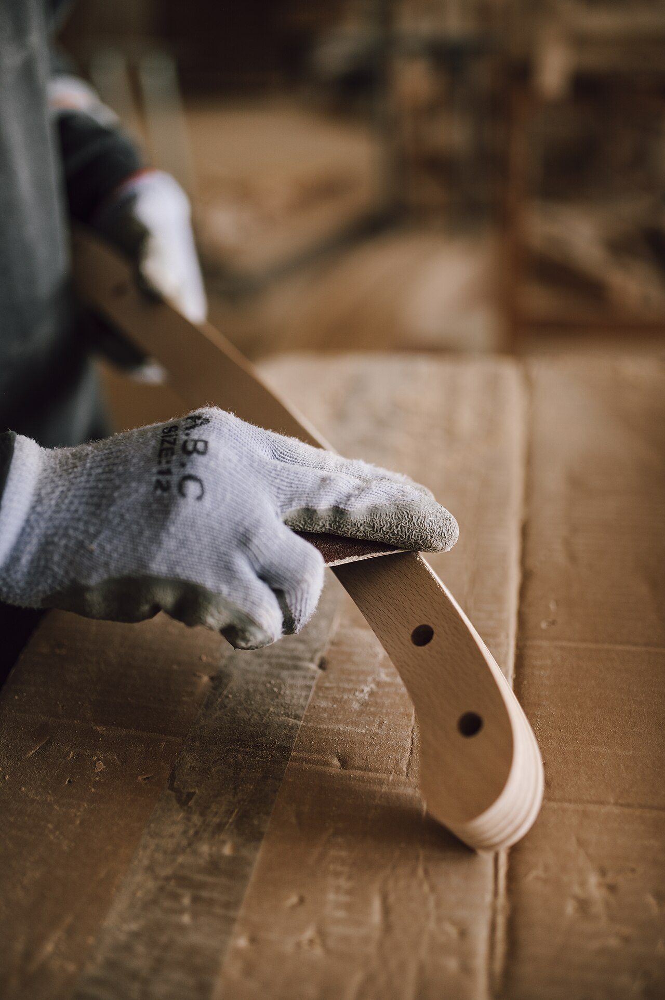

Nơi Tổ Ấm Tìm Về Sự Bình Yên
Chúng tôi tin rằng một ngôi nhà đẹp không cần quá phô trương cầu kỳ, mà là không gian ngập tràn ánh sáng tự nhiên, chạm vào đâu cũng cảm nhận được sự ấm áp, mộc mạc của gỗ thật.
Đem Tinh Thần "Hygge" Đan Mạch Về Với Căn Hộ Việt
Nordic Living được sáng lập bởi đội ngũ kiến trúc sư nội thất tốt nghiệp tại Châu Âu. Trở về Việt Nam, chúng tôi nhận thấy các gia đình trẻ luôn khao khát những món đồ nội thất thanh thoát, ít góc nhọn nguy hiểm, tôn trọng thớ gỗ tự nhiên thay vì những lớp sơn công nghiệp bóng bẩy nặng nề.
"Hygge" trong tiếng Đan Mạch là cảm giác ấm cúng, thư thái khi ngồi đọc sách bên tách trà nóng, lắng nghe tiếng mưa rơi ngoài hiên cửa sổ. Đó chính là rung động mà mọi chi tiết nội thất may đo của Nordic Living luôn hướng tới.
"Chúng tôi không sản xuất hàng loạt theo mẫu mã rập khuôn. Mỗi món đồ ra đời đều có kích thước riêng để vừa khít căn nhà của bạn."

Xưởng Sản Xuất 2.000m² Tại Thủ Đức
Để kiểm soát chất lượng từ phôi gỗ đến khi hoàn thiện, xưởng mộc Nordic Living tại Thủ Đức được đầu tư hệ thống máy cưa bàn trượt và máy chà nhám trục đứng chính xác của Đức, kết hợp với tay nghề điêu luyện của thợ cả trên 15 năm kinh nghiệm mộc gỗ tự nhiên.
Mỗi khối gỗ sồi trước khi ráp mộng đều phải kiểm tra độ ẩm nghiêm ngặt dưới 12%. Điều này triệt tiêu hoàn toàn hiện tượng nứt toác, co ngót khi thời tiết giao mùa tại Việt Nam.
3 Trụ Cột Vàng Cho Một Món Đồ Bền Vững
🌲 100% Gỗ Sồi Bắc Mỹ Chuẩn FSC
Khai thác từ các cánh rừng có quy hoạch bền vững tại Bắc Mỹ. Gỗ sồi trắng có giác gỗ màu nhạt, tâm gỗ từ nâu nhạt đến nâu đậm với khả năng kháng sâu mọt tự nhiên tuyệt hảo.
⚙ Mộng Gỗ Chắc Chắn & Giảm Chấn Blum
Khung sườn bàn ghế được liên kết bằng mộng chốt gỗ âm dương truyền thống. Toàn bộ bản lề, ray ngăn kéo đều sử dụng phụ kiện Blum (Áo) hoặc Hafele (Đức) trượt êm ái trọn đời.
🎨 Dầu Lau Thực Vật Osmo Thụy Sĩ
Tuyệt đối không sử dụng sơn bóng PU chứa chì hay dung môi độc hại. Dầu lau Osmo thẩm thấu sâu nuôi dưỡng thớ gỗ, an toàn 100% khi trẻ nhỏ tiếp xúc hoặc ngậm đồ chơi.
Trải Nghiệm Thực Tế Tại Showroom Nordic Living
Kính mời quý khách ghé thăm không gian trưng bày tại An Phú, TP. Thủ Đức để trực tiếp chạm vào vân gỗ sồi mộc mạc và cảm nhận độ êm ái của các mẫu sofa bọc vải lanh.